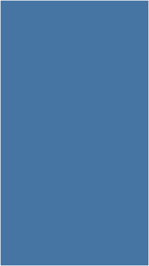

视频比例适配

素材宽高比：
a:b < 0.52
素材宽高比：
0.52 < a : b < 0.67

素材宽高比：
0.67 < a : b
素材宽高比：
0.67 < a : b
- 视频宽高比a:b 在[ 0.52 , 0.67 ] ，在播放器中以高度边撑满播放器等比例缩放居中显示视频素材 //备注: 0.52的参考依据为全面屏最小长宽比（17.256:9）,0.67参考依据为（856*1280尺寸的视频 ）;
- 视频宽高比在a:b > 0.67（视频素材偏短及横屏视频）时，在播放器中以宽度边撑满播放器宽度进行等比例缩放。视频居中显示，多余显示区域补黑边;
- 视频宽高比a:b < 0.52 ( 视频素材偏长）时，在播放器中以宽度边撑满播放器宽度进行等比例缩放，视频居中显示。